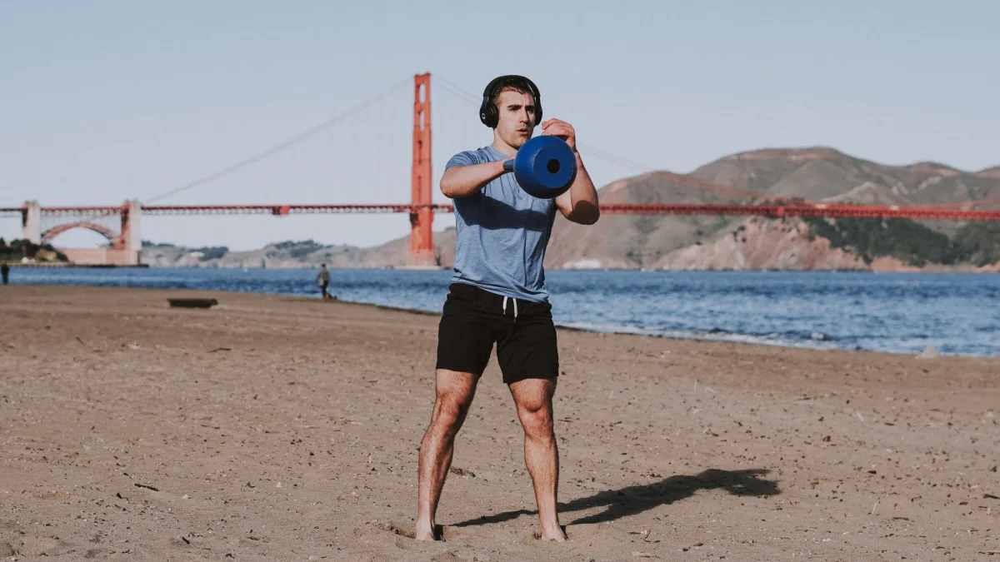

B96 · Try this kettlebell and bodyweight energizer!
Hi {first_name},
Let's be real.
Walking into the gym feeling like a determined warrior every session just isn't the way things go.
Heck, it's life.
But, what if there was a way when you're feeling less than your best, that you could get in the gym and know you're supporting your body's resources, instead of draining them?
What exactly might training like this look like?

In my prior two emails, we covered “when to train and when to back off.” Today we'll go one step further... I'm going to teach you a kettlebell and bodyweight energizer that you can use anytime in situations like the one I mentioned above. You can do this at home, the park, the gym - anywhere.
Should I also add that it won't take you more than 15 minutes to complete??
Here it is:
Kettlebell Snatch Energizer (Super-set)
Weight: Light
Reps: 5 Left / 5 Right + 5 Spinal Roll Downs with Chest Opener
Rest: None (back-to-back exercise supersets)
Duration: 5-8 minutes *Remember to get in a quick warm-up in first
To help your success with this workout-work in combination, I just created and posted a nearly 8-minute video on my Instagram TV covering this. Here is the link
When you attempt the kettlebell snatch-lunge, if it feels too advanced for where you're currently at, don’t worry. Here are two other options to explore:
Regression I (Intermediate Level)
Regression II (Beginner/Intermediate Level)
Weight, Reps, Rest & Duration: Same as prescribed for the Snatch
This concept of working in I feel is paramount to experiencing high levels of performance and well being. In a session like this (while it is a hybrid type of training), the idea is still to cultivate energy in the body and feel uplifted afterward.
When you are performing the bodyweight work in movement (Spinal Roll Down with Chest Opener), remember to move slow, link your breath with the movement, and do your best to feel into your body. You'll be amazed at what can happen!
If you are interested in diving deeper into this topic, I suggest grabbing Paul Chek's book How to Eat, Move, and Be Healthy, where there's tons of bodyweight working in exercises, as well as guidance to help you find which one(s) you need most.
I truly hope you enjoy today's movement session. If applied, I'm confident you'll leave the gym with more energy than when you walked in with! ; )
P.S. Since the Kettlebell Snatch is a lift that can be quite challenging, I decided to create a detailed downloadable PDF as well as a 10+ minute instructional video tutorial addressing 3 of the Biggest Snatch Mistakes. You'll love the drills and tips I've included that will make you a better lifter in minutes - saving your back, shoulders, and grip.
Click here to grab this as well as to be notified of the release of my new Kettlebell Lifestyle Program. You'll save more than 50% once available, and I'll also send you more cool gifts for being on the waitlist! : )
|